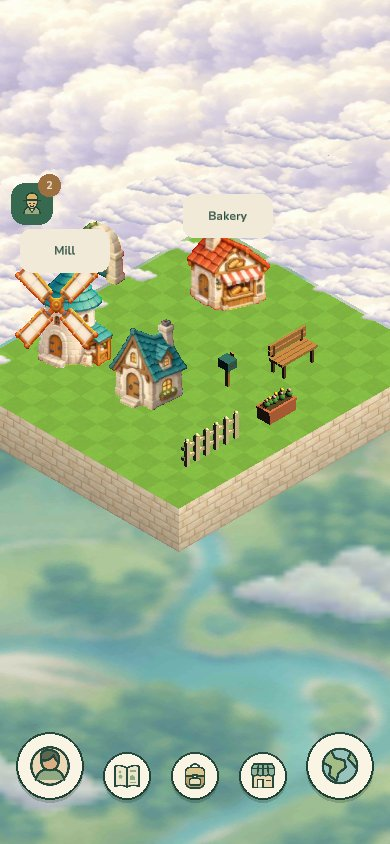
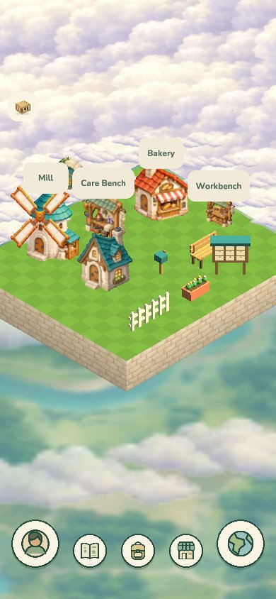
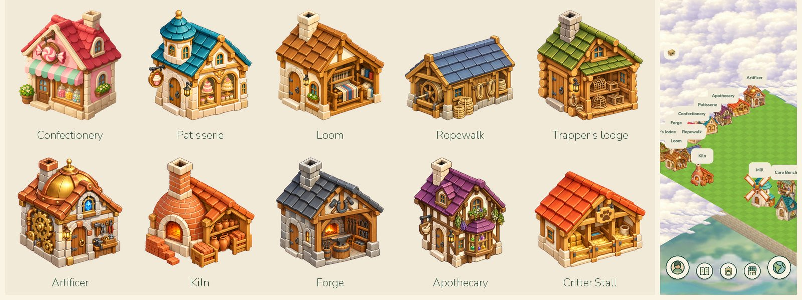
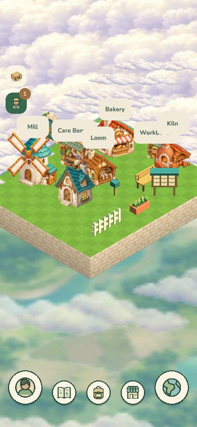
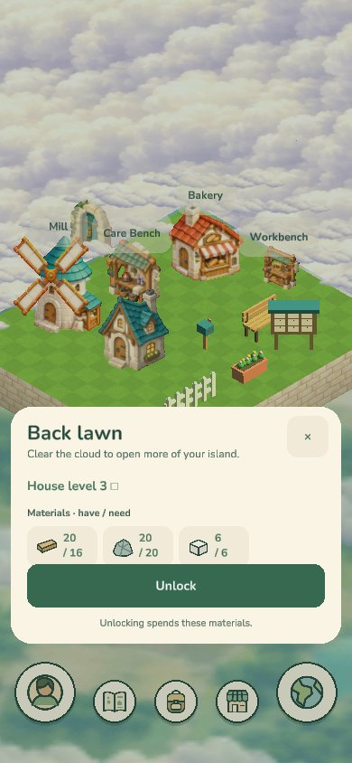
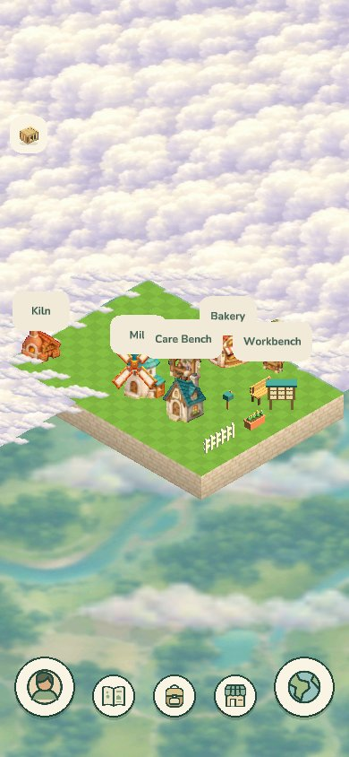
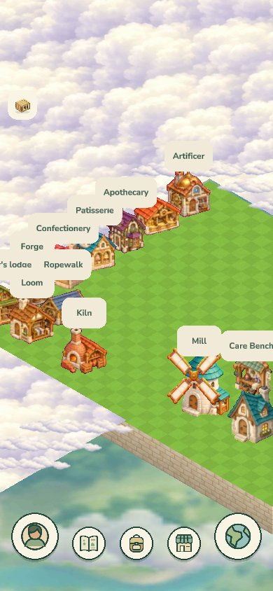

16 September: the first illustrated Home

Painted buildings arrive: the Mill and the Bakery on a lawn above the clouds.
23 September: ten new buildings
Ten buildings the player can buy were drawn from generated sprites in the style of the Bakery.

Before: the four starter buildings, the Mill, Care Bench, Bakery and Workbench. 
The ten new buildings, and Home with all of them placed. 
The first of them in place beside the starters: the Loom and the Kiln.
The back lawn
More land lies under the cloud. Spending materials opens it, and the town spreads back across it.

The Back lawn card: materials in hand against what is needed, and an Unlock button. 
A building, the Kiln, stands on the newly opened back lawn. 
Every row open: the town stretches back across the lawn.